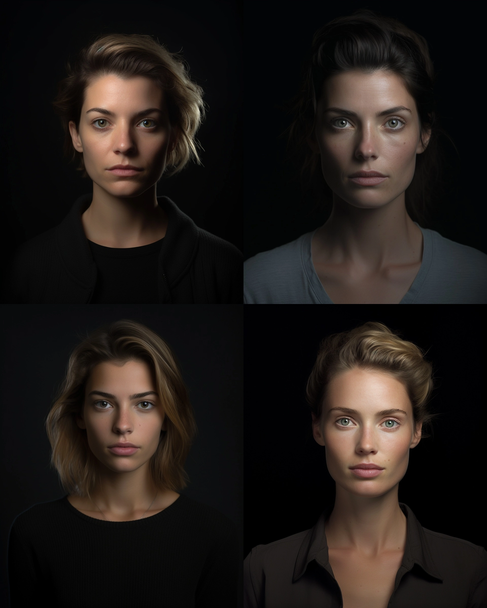
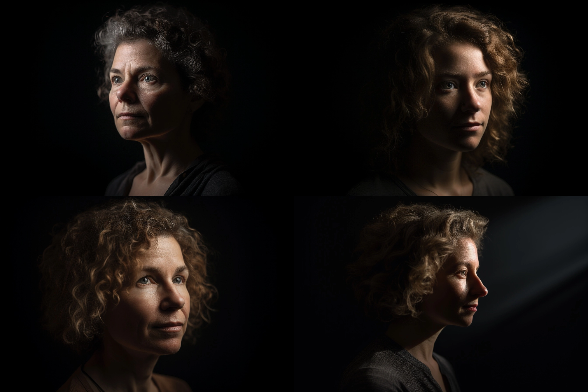
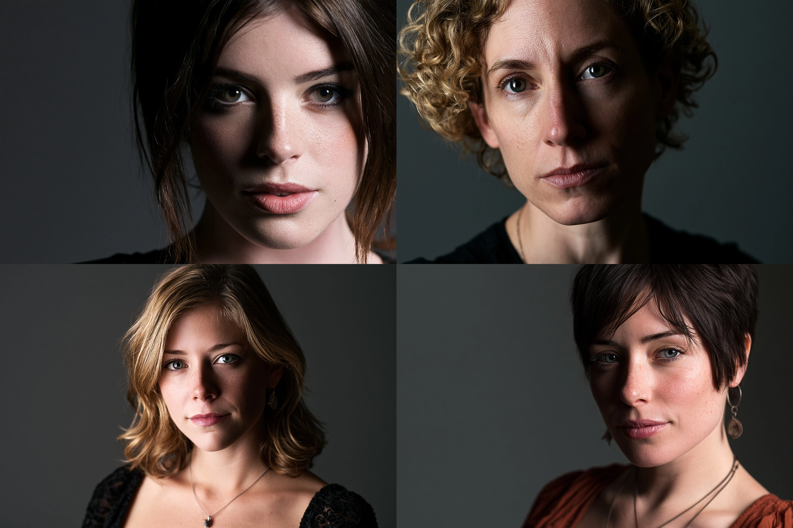
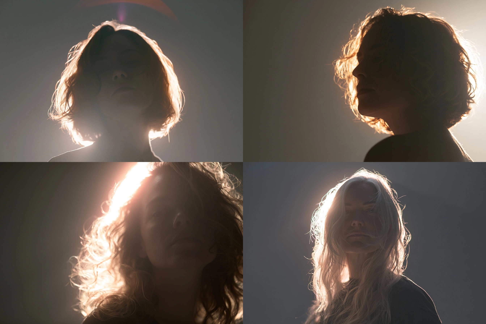
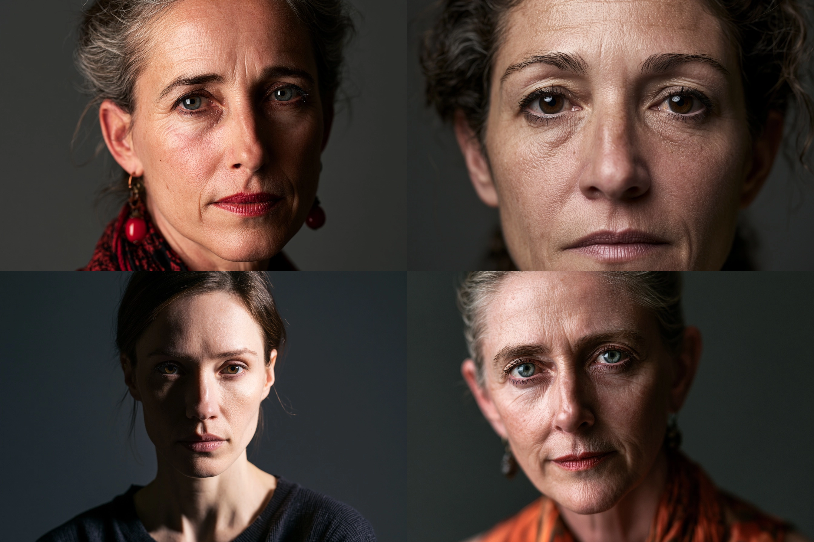
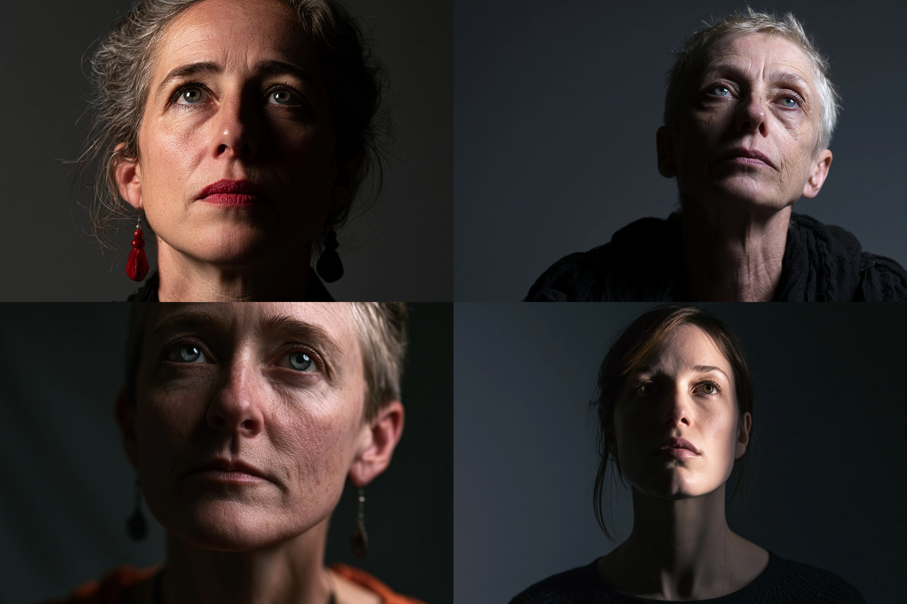

把“从哪里照”写成可检查的面部几何，而不是含糊的戏剧气氛
光位不是“明亮或阴暗”的同义词，而是光源、主体与相机三者的夹角。它首先决定哪些面被照见、哪些结构通过投影显形，情绪只是这种信息分配的结果。写提示词时，至少同时给出水平角、垂直角、相机关系和阴影落点；只写 cinematic lighting，模型通常会退回训练集中最常见的左上方三分之四光。
| 光位 | 几何定义 | 结构指纹 | 常见失误 |
|---|---|---|---|
| 正面光 | 光轴与镜头轴夹角约 0°–15° | 鼻影短，左右亮度接近，纹理起伏被压平 | 把“正面”误生成左上方柔光 |
| 侧光 | 水平夹角约 45°–90° | 鼻影横移，面部明暗分区，颧骨与鼻梁显形 | 阴影侧被环境光填得过亮 |
| 逆光 | 光源位于主体后方 150°–180° | 轮廓亮、正面暗，背景或光源可能过曝 | 模型偷偷添加正面补光，变成普通轮廓光 |
| 顶光 | 光源在头顶上方，俯角约 60°–90° | 眼窝、鼻下、下唇与下巴出现垂直叠影 | 眼睛全黑，失去人物可读性 |
| 底光 | 光源低于下巴，仰角约 30°–70° | 鼻影上翻，眉弓下缘变亮，熟悉结构被反转 | 只变亮下巴，没有出现向上的投影 |

a short-haired East Asian woman facing the camera, centered against a pale gray seamless backdrop, a large softbox directly behind and concentric with the camera, frontal light within 5 degrees of lens axis, 5600K, no side key, matte natural skin with visible pores, black wool turtleneck, contemporary beauty editorial photography, restrained neutral grading, 85mm lens, f/5.6, eye-level camera, head-and-shoulders crop, symmetrical magazine portrait with clean margins
模型与参数：MJ v8.1 · --ar 4:5 --stylize 60 --chaos 0 --v 8.1 · 无负面词。
看什么：鼻影应短而近鼻底，两颊亮度接近；毛衣轮廓清楚但脸部凹凸较弱。正面光不是“没有阴影”，而是阴影被藏到相机看不见的背向面。
侧光的名称经常被当作风格标签，真正可复现的却是几何指纹。判断顺序应是：光源在脸的哪一侧 → 鼻影朝哪里 → 鼻影是否接到颊影 → 两眼是否都有眼神光。下面几种布光可以共享同一人物与镜头，只改变灯的位置。

a middle-aged man turned 25 degrees away from camera, seated in a dark umber studio, one hard-soft key light camera left at 45 degrees horizontally and 35 degrees above eye level, 4300K, no frontal fill, weathered matte skin, coarse charcoal linen jacket, classical low-key portrait photography, subdued brown-black palette, 85mm lens, f/4, eye-level camera, chest-up composition, a small illuminated inverted triangle on the shadow-side cheek, both eyes readable
模型与参数：FLUX.2 · 1536×1920 · guidance 4.0 · 28 steps · seed 2404 · negative：flat frontal lighting, two equal key lights, beauty retouching。
看什么：阴影侧眼下应有一块被鼻影与颊影围住的亮三角，宽度不超过眼，长度不越过鼻底。只有半边脸暗而没有三角，不叫伦勃朗光。

a bald Black woman looking straight into camera, standing before a black seamless backdrop, a narrow stripbox exactly 90 degrees camera right at eye height, 5200K, zero fill and no overhead light, natural skin sheen, sculptural silver ear cuff, matte black garment, minimalist dramatic studio portrait photography, 105mm lens, f/8, eye-level, tight headshot, one facial half illuminated and the other half nearly black, division aligned with nose bridge
模型与参数：Seedream 5 · 1536×1920 · prompt adherence 0.82 · seed 9041 · negative：frontal fill, bilateral lighting, glowing background。
看什么：明暗边界应沿额头—鼻梁—人中近似贯穿，暗侧只保留极少反射。若鼻子两侧都亮，灯其实仍在 45°；若背景亮出轮廓，则系统增加了第二支灯。
| 经典布光 | 灯具几何 | 可核验指纹 | 适合强调 |
|---|---|---|---|
| 伦勃朗光 | 侧前方约 45°，高于眼睛约 30°–45° | 暗侧脸颊出现封闭倒三角 | 骨相、沉着、明暗体积 |
| 蝴蝶光 / Paramount | 灯在镜头正上方，向下约 25°–45° | 鼻下有居中的蝶形短影，两颊对称 | 颧骨、对称性、经典美人肖像 |
| 分割光 | 灯在正侧方约 90°，接近眼高 | 鼻梁中线把脸分成一亮一暗 | 棱角、冲突、强图形 |
| 环形光 | 环形灯与镜头同轴，镜头穿过灯心 | 瞳孔周围圆环眼神光，鼻影包围且极短 | 肤色均匀、平面感、直视感 |
| 蛋形光 | 上方主灯加下方补光板，形成纵向“贝壳”夹光 | 上眼神光较强、下方有弱眼神光，下颌阴影被托起，脸部亮区呈纵向椭圆 | 柔化眼袋与法令纹，同时保留鼻梁塑形 |
“蝴蝶光”和 “Paramount”在当代摄影语境中通常指同一类轴线上方主灯；提示词最好两者并写，再补上鼻下短影。环形光不是“光围绕人物一圈”，而是灯具围绕镜头；蛋形光也不是画一个蛋形光斑，而是上主下补的夹光几何。名称负责召回训练集，指纹负责约束结果。
这些模板的差异还会受到脸朝向影响。灯位固定而人物转头时，相机看到的鼻影会移动，原本的伦勃朗三角可能断开，分割光的中线也会偏到脸颊。因此提示词不能只锁灯，还要锁定 face turned 25 degrees 或 looking straight into camera。同样，灯具尺寸只改变阴影边缘的软硬，不改变模板的基本拓扑：大型柔光箱仍能形成伦勃朗三角，只是三角边缘更柔；小型硬灯仍能形成蝴蝶光，只是鼻影更尖。
环形光最容易被误写成轮廓光。可复现的写法必须包含“镜头穿过灯心”和“圆环眼神光”；它的阴影沿镜头视线藏在鼻、下巴之后，因此脸会显得平，却会放大正对镜头的皮肤反射。蛋形光则用上方主灯完成鼻梁与颧骨塑形，再用较弱的下方反射板抬起眼袋、鼻下和下颌阴影。下补若接近主灯强度，脸会出现上下两套影子，甚至产生不自然的双眼神光；通常让下补低约两档，才保留“上方为因、下方为补”的层级。

a woman with loose translucent hair standing in a dusty warehouse doorway, facing the camera, one bare 5600K light directly behind her head on the camera-subject axis, light source hidden by the skull, zero frontal fill, zero ambient bounce, flyaway hair transmitting light, dark unreflective cotton coat, raw cinematic location portrait, high-contrast exposure, 50mm lens, f/2.8, eye level, waist-up vertical frame, face underexposed by 3 stops, bright rim around hair and shoulders, doorway blown to white, no facial catchlights
模型与参数：FLUX.2 · 1536×1920 · guidance 4.5 · 30 steps · seed 7718 · negative：front key light, fill light, bright face, beauty lighting, side key, visible facial catchlight。
看什么：发丝和肩线应透亮，脸比背景至少暗三档，眼睛没有正面眼神光。轮廓光来自背后擦过边缘，正面细节被剥夺，观者只能用轮廓补全人物，因此产生距离与未知感。
人像训练数据偏好清楚的脸，模型常把 backlit 解释成“背后有亮边，同时脸仍被商业主灯照亮”。这其实是逆光加正面补光，不是真逆光。强制时要同时写出灯的遮挡位置、零补光、脸欠曝档数、背景过曝和无眼神光；五项互相校验，比重复十次 backlit 有效。若产品用途必须看清脸，就应承认自己要的是“逆光轮廓 + 低强度前补”，而非伪装成纯逆光。
人类长期在太阳和室内顶灯下观察脸，默认“上亮下暗”。顶光把这一经验推到极端；底光则把它反转。恐惧感并非来自“绿色”或“阴森”形容词，而是鼻影、眉影都朝不熟悉的方向移动。

an androgynous dancer standing still on a dark concrete stage, chin level, a single 40cm gridded softbox directly overhead at 85 degrees downward, 5000K, no front or side fill, slightly damp skin, black satin costume absorbing most light, contemporary dance campaign photography, severe tonal structure, 70mm lens, f/5.6, camera at chest height, three-quarter body vertical frame, deep eye sockets, compact shadow beneath nose and jaw, isolated pool of light
模型与参数：MJ v8.1 · --ar 4:5 --stylize 45 --chaos 0 --v 8.1 · 无负面词。
看什么：额头、鼻梁与肩顶最亮，眼窝和下巴下方连续变暗。若双眼出现圆形正面眼神光，说明模型添加了前灯；若背景整体均匀亮，则顶灯失去“光池”的空间指纹。

an elderly storyteller leaning slightly toward camera in a black-box theater, a single small diffused lantern 35cm below the chin and 20 degrees camera left, uplight at 45 degrees, 3200K, all ceiling lights off, wrinkled natural skin, dark felt coat, weathered wooden lantern frame, theatrical narrative portrait photography without fantasy effects, 50mm lens, f/4, eye-level camera, chest-up vertical composition, nostril shadow projected upward across the nose, lower eyelids bright, forehead fading into darkness
模型与参数：Nano Banana Pro · 1536×1920 · temperature 0 · seed 3186 · negative：overhead key light, daylight, glowing eyes, supernatural aura。
看什么：下巴、鼻底和下眼睑先接光，鼻影向眉间上翻，额头反而变暗。仅把画面染成暖色不算底光；必须看到投影方向被物理性反转。
三点布光由主光、补光、轮廓光构成：主光决定方向与面部模板；补光不应创造第二套阴影，只控制暗部还能读到多少；轮廓光负责主体与背景的分离。提示词中的比例应先声明口径。本章统一写成补光照度 : 主光照度：1:2、1:4、1:8 分别意味着补光比主光低 1、2、3 档。比例越小，阴影信息越少，但并不自动更“高级”。
这里的比例描述的是灯对主体的相对贡献，不是画面像素的明暗比。皮肤反射率、墙面反弹、曝光曲线都会改变最终像素值，所以生成结果应以“档差和结构可读性”复核：1:4 时暗侧眼睛仍应可辨，但不该与亮侧等亮。轮廓灯也不必机械套用同一比例；黑发配黑背景可能需要接近主灯的强度，浅色头发配中灰背景则只需更弱的擦边光。决定它的是分离需求，而不是三点布光这个名称。
模型还常把“fill light”画成另一支有方向的侧灯，制造第二道鼻影。为避免这一点，应把补光描述成靠近镜头轴、面积大、阴影近乎不可见，并明确 no second nose shadow。如果想要 1:8 的低调光，不要要求“脸部所有细节清楚”，那会迫使模型提高补光，和三档差互相冲突。正确的用途约束应改为“暗侧眼睛勉强可读，黑衣仍与背景有轮廓分离”。
| 补光 : 主光 | 档差 | 面部结果 | 用途 |
|---|---|---|---|
| 1:2 | 低 1 档 | 暗侧纹理完整，过渡温和 | 企业肖像、美妆、轻喜剧 |
| 1:4 | 低 2 档 | 仍读得到暗侧眼睛，体积明确 | 编辑人像、剧情宣传 |
| 1:8 | 低 3 档 | 暗侧只剩关键结构，分离强 | 悬疑、角色海报、低调光 |
a female detective seated at a steel desk in a dim archive room, looking just past camera, three-point lighting: 4800K key softbox 45 degrees camera left and 30 degrees high, neutral frontal fill at one quarter of key intensity, 5600K gridded rim light behind camera right at half key intensity, realistic skin texture, brushed steel desk, charcoal wool coat, restrained neo-noir editorial photography, natural color response, 85mm lens, f/4, eye-level camera, waist-up 4:5 composition, key-to-fill exposure difference exactly 2 stops, shadow-side eye readable, no second nose shadow
模型与参数：Seedream 5 · 1536×1920 · prompt adherence 0.88 · seed 4280 · negative：flat bilateral key light, two nose shadows, overexposed rim, crushed black eye。
检验一张生成图时，不要先问“有没有电影感”，而要依次问：鼻影落在哪里？暗侧差几档？眼神光来自几支灯？亮边是否与背景分离？当这些问题都能回答，光位就从气氛词变成了可复用的生产参数。